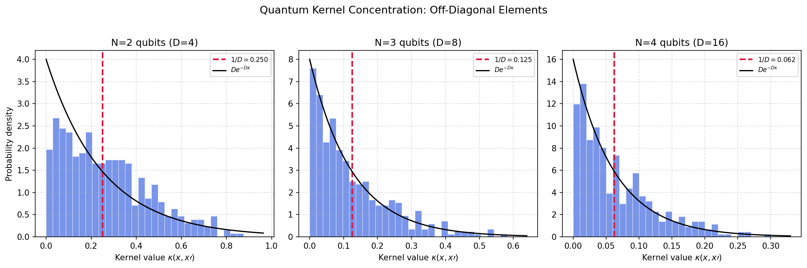

This exercise develops the theory of quantum kernel methods from the perspective of Haar integration. We prove that quantum kernels defined by deep random circuits concentrate exponentially, rendering them unable to distinguish any two inputs. This establishes a precise connection between circuit expressibility and kernel quality.
Background
A kernel method measures similarity between data points and hands those similarities to a classical learner such as a support vector machine. A quantum kernel computes the similarity scores on a quantum computer. Each data point \(x\) is loaded into a circuit \(U(x)\) that prepares a state, and the score for a pair is the fidelity between the two states, the overlap that says how much one looks like the other. Collecting these scores for every pair fills the Gram matrix the classical learner consumes. The hope is that the feature space, of dimension \(2^N\), holds structure no efficient classical method can reproduce.
Concentration of measure limits how far that hope carries. Once the encoding is expressive enough that the relative circuit \(V = U(x')^\dagger U(x)\) acts like a 2-design, an off-diagonal score becomes the overlap of an effectively random state with a fixed reference. Its mean is \(1/D\) with \(D = 2^N\), and its variance is of order \(1/D^2\), so the typical spread is no larger than the mean and both are exponentially small. Every distinct pair receives nearly the same tiny similarity.
When that happens the Gram matrix loses its shape. It drifts toward a rescaled identity, a near-diagonal matrix that calls every input equally unlike every other and so carries no usable structure. The off-diagonal scores, gathered into a histogram, pile up at \(1/D\) and thin out along an exponential \(De^{-D\kappa}\) tail, the signature of overlaps drawn from random states.
The consequence is a sampling wall. Telling two inputs apart means resolving a difference of order \(1/D\) against measurement noise, which costs on the order of \(D = 2^N\) shots per entry and erases the advantage. A quantum kernel stays useful only when its encoding is structured enough to hold the off-diagonal spread above the sampling floor, sitting between an encoding too rigid to separate the data and one so expressive it scrambles every pair to the same value.
1. The Physical Setup
A quantum kernel is a similarity measure between two classical data points \(x\) and \(x'\), defined by the overlap of their quantum feature states:
where \(|\phi(x)\rangle = U(x)|0\rangle\) is the quantum feature state and \(\rho(x) = |\phi(x)\rangle\langle\phi(x)|\).
This kernel is a valid positive semi-definite kernel (by construction), and can be plugged into any classical kernel machine (SVM, kernel ridge regression, Gaussian processes). The power of the approach lies in the exponentially large feature space \(\mathcal{H} = (\mathbb{C}^2)^{\otimes N}\) that the quantum circuit explores.
But there is a catch: if the circuit \(U(x)\) is too expressive (too deep, too random), the feature states \(|\phi(x)\rangle\) become essentially Haar-random, and the kernel concentrates around zero for \(x \neq x'\).
2. Connection to Haar Measure Theory
The key insight is that the quantum kernel \(\kappa(x, x')\) is nothing but the fidelity between two quantum states. When the encoding circuit \(U(x)\) forms a unitary 2-design (or is Haar-random), we can compute its statistics exactly.
Consider the relative circuit \(V = U(x')^\dagger U(x)\). If the encoding is sufficiently expressive, \(V\) behaves as a Haar-random unitary for generic pairs \((x, x')\) with \(x \neq x'\). Then:
2. Kernel Matrix Properties: A kernel matrix \(K_{ij} = \kappa(x_i, x_j)\) must be positive semi-definite. Its spectrum determines the effective dimensionality of the feature space. A flat kernel (\(K_{ij} \approx \delta_{ij}/D\)) has rank \(\approx 1\) and is useless for classification.
3. Expressibility (from Ch. 5): The expressibility of a parameterized circuit \(U(\theta)\) measures how close its output distribution is to the Haar measure. It is quantified by the frame potential: \[
\mathcal{F}^{(2)} = \int |\langle \phi(\theta) | \phi(\theta') \rangle|^4\, d\theta\, d\theta'.
\] For the Haar measure, \(\mathcal{F}^{(2)}_{\mathrm{Haar}} = 2/(D(D+1))\).
4. Geometric Measure of Distinguishability: The kernel value \(\kappa(x,x')\) is the cosine-squared of the angle between \(|\phi(x)\rangle\) and \(|\phi(x')\rangle\) on the complex projective space \(\mathbb{CP}^{D-1}\). When \(\kappa \to 0\), the states are orthogonal (maximally distinguishable); when \(\kappa = 1\), they are identical.
4. Exercise
(a) Show that for a Haar-random encoding, the expected off-diagonal kernel value is \(\mathbb{E}[\kappa(x, x')] = 1/D\).
(b) Show that the variance of the kernel is \(\mathrm{Var}[\kappa] = \frac{D-1}{D^2(D+1)} \sim 1/D^2\), so the kernel matrix concentrates around \(K \approx I/D + (1-1/D)\,\mathrm{diag}\).
(c) Using SymPy, verify the exact formula for the kernel mean and variance symbolically.
(d) Numerically construct the kernel matrix for \(M\) Haar-random feature states at \(N = 2, 3, 4\) qubits, and visualize the concentration phenomenon.
5. Analytical Derivation
Part (a): Average Kernel Value
For two distinct inputs \(x \neq x'\), the relative circuit \(V = U(x')^\dagger U(x)\) is Haar-random. The kernel is:
For \(N = 10\) qubits, this gives \(\mathbb{E}[\kappa] = 1/1024 \approx 0.001\). The kernel is essentially zero for all distinct input pairs.
Part (b): Kernel Variance and Concentration
We need \(\mathbb{E}[\kappa^2] = \mathbb{E}[|\langle 0|V|0\rangle|^4]\). This is the second moment of the fidelity, computed via the collision probability formula:
which is approximately a rescaled identity matrix. Such a kernel assigns equal similarity to all pairs and is trivially non-informative for any classification task.
6. Physical Interpretation
The concentration of the quantum kernel is a direct consequence of the curse of dimensionality in exponentially large Hilbert spaces. Two random points on the unit sphere in \(\mathbb{C}^D\) are nearly orthogonal with overwhelming probability when \(D\) is large.
This has profound implications for quantum advantage in kernel methods:
Too little expressibility\(\Rightarrow\) the feature states lie in a low-dimensional manifold, and the quantum kernel reduces to a classical one.
Too much expressibility\(\Rightarrow\) the feature states fill the Hilbert space uniformly (Haar-like), and the kernel concentrates around zero.
The sweet spot\(\Rightarrow\) the circuit maps data into a structured, problem-dependent subspace with geometric properties that a classical kernel cannot efficiently reproduce.
This mirrors the barren plateau phenomenon (Exercise 7.1) and the QELM concentration (Exercise 7.4): scrambling destroys the gradients, the features, and the kernels.
7. Symbolic Verification (SymPy)
Code
import sympy as spD = sp.Symbol('D', positive=True, integer=True)# Part (a): Expected kernel valueE_kappa = sp.Rational(1, 1) / Dprint(f"E[kappa] = {E_kappa}")# Part (b): Second moment and varianceE_kappa2 = sp.Rational(2, 1) / (D * (D +1))Var_kappa = sp.simplify(E_kappa2 - E_kappa**2)print(f"E[kappa^2] = {E_kappa2}")print(f"Var[kappa] = {Var_kappa}")# Verify it simplifies to (D-1)/(D^2*(D+1))expected_var = (D -1) / (D**2* (D +1))assert sp.simplify(Var_kappa - expected_var) ==0print(f"\nVerified: Var = (D-1) / [D^2(D+1)]")# Large-D asymptoticsprint(f"\nAsymptotic expansion:")print(f" E[kappa] ~ {sp.series(E_kappa, D, sp.oo, 3)}")print(f" Var[kappa] ~ {sp.series(Var_kappa, D, sp.oo, 4)}")print(f" sigma[kappa] / E[kappa] ~ {sp.simplify(sp.sqrt(Var_kappa) / E_kappa)}")
For a Haar-random encoding the expected off-diagonal kernel is \(1/D\) with variance \((D-1)/[D^2(D+1)]\sim1/D^2\), so the signal and its fluctuation are the same order and distinguishing two inputs takes order \(D\) shots. Useful quantum kernels live between rigid and fully scrambling encodings, where the feature map sends data into a structured subspace.
Code
import numpy as npfrom scipy.stats import unitary_groupimport matplotlib.pyplot as pltnp.random.seed(42)plt.rcParams['figure.dpi'] =150fig, axes = plt.subplots(1, 3, figsize=(14, 4.5))for idx, N inenumerate([2, 3, 4]): D =2**N M =30# number of feature states# Generate M Haar-random feature states states = [unitary_group.rvs(D)[:, 0] for _ inrange(M)]# Build kernel matrix K = np.zeros((M, M))for i inrange(M):for j inrange(M): K[i, j] =abs(states[i].conj() @ states[j])**2# Extract off-diagonal elements mask =~np.eye(M, dtype=bool) off_diag = K[mask] ax = axes[idx] ax.hist(off_diag, bins=30, color='royalblue', alpha=0.7, density=True, edgecolor='white', linewidth=0.5) ax.axvline(1/D, color='crimson', linestyle='--', linewidth=2, label=f'$1/D = {1/D:.3f}$')# Overlay the exact Porter-Thomas-like distribution x_grid = np.linspace(0, max(off_diag)*1.1, 200)# For large D, kappa ~ Exp(D) ax.plot(x_grid, D * np.exp(-D * x_grid), 'k-', linewidth=1.5, label=r'$De^{-D\kappa}$') ax.set_title(f'N={N} qubits (D={D})', fontsize=12) ax.set_xlabel(r'Kernel value $\kappa(x, x\prime)$', fontsize=10)if idx ==0: ax.set_ylabel('Probability density', fontsize=10) ax.legend(fontsize=8) ax.grid(True, ls='--', alpha=0.4)plt.suptitle('Quantum Kernel Concentration: Off-Diagonal Elements', fontsize=13, y=1.02)plt.tight_layout()plt.show()# Quantitative verification tableprint("\nQuantitative Verification:")print(f"{'N':>3s}{'D':>5s}{'E[kappa] MC':>12s}{'1/D':>8s}{'Var MC':>10s}{'Exact':>10s}")print("-"*55)for N in [2, 3, 4, 5, 6]: D =2**N kappas = []for _ inrange(2000): V = unitary_group.rvs(D) kappas.append(abs(V[0, 0])**2) mc_mean = np.mean(kappas) mc_var = np.var(kappas) exact_var = (D-1) / (D**2* (D+1))print(f"{N:3d}{D:5d}{mc_mean:12.6f}{1/D:8.6f}{mc_var:10.2e}{exact_var:10.2e}")print("\nKernel concentration confirmed: deep circuits kill kernel discriminability.")

Quantitative Verification:
N D E[kappa] MC 1/D Var MC Exact
-------------------------------------------------------
2 4 0.243789 0.250000 3.62e-02 3.75e-02
3 8 0.125058 0.125000 1.26e-02 1.22e-02
The exponential concentration of kernel values is the same concentration of measure as the Page formula and the overlap distribution, now read as the collapse of pairwise similarity scores toward a constant. When that happens the Gram matrix becomes a rescaled identity and the data is washed out. The same collapse, in a slightly different model, appears in quantum extreme learning machines.
References
Havlíček et al., Supervised learning with quantum-enhanced feature spaces, Nature (2019).
Schuld and Killoran, Quantum machine learning in feature Hilbert spaces, Physical Review Letters (2019).
Sarkar et al., Concentration-free quantum kernel learning in the Rydberg blockade, arXiv preprint arXiv:2508.10819 (2025).
Hubregtsen et al., Training quantum embedding kernels on near-term quantum computers, Physical Review A (2022).
Płodzień, Information Scrambling, Quantum Chaos, and Haar-Random States, lecture notes (2025). arXiv:2511.14397